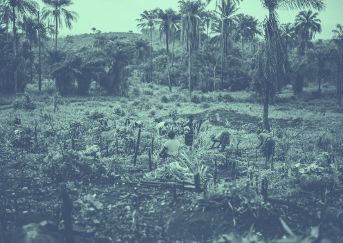

Support Indian Farmers
THE CHALLENGE
Indian farmers face major challenges such as low soil fertility, unpredictable weather,
and poor market awareness.
TAKE ACTION
KRISHIMITRA?
KrishiMitra helps farmers with soil analysis, crop recommendations, mandi price updates. It supports smartphones and feature phones.

Soil Prediction
The system evaluates soil characteristics using machine learning to determine its category. This classification acts as the foundation for further crop and fertilizer recommendations.

Fertilizer Prediction
Recommends the most suitable fertilizers by analyzing nutrient needs based on the predicted soil type. This ensures balanced crop growth and helps farmers avoid unnecessary or incorrect fertilizer usage.
Crop Prediction
The model suggests the most appropriate crops by matching soil characteristics with regional crop suitability. This helps farmers choose crops that grow better and provide higher yield potential on their land.
Predict
AGRICULTURE FACTS THAT MATTER
DID YOU KNOW?
52%
Farmers do not know their soil type or nutrient levels.
40%
Yield losses happen due to incorrect crop choices.
₹0
Most farmers spend nothing on soil testing due to lack of access.
70%
Farmers rely only on experience—not data—for crop planning.
SUCCESS STORIES
LET’S ACT — Practical Support for Farmers
EVENT
18 Jan 2026 Bhavnagar block Free Soil Test & Fertilizer Advisory Camp
Bring a small soil sample and get an instant NPK-based recommendation for your crop.
LATEST NEWS
Pest Alert: Early Leaf Miner Attack Detected in Groundnut Fields
Sattelite monitoring has detected early pest movement.
Farmers are advised to follow IPM steps and request crop-specific action plans
based on their field location.
Get crop advisories, weather alerts, fertilizer tips & KrishiMitra updates delivered to your inbox every month.